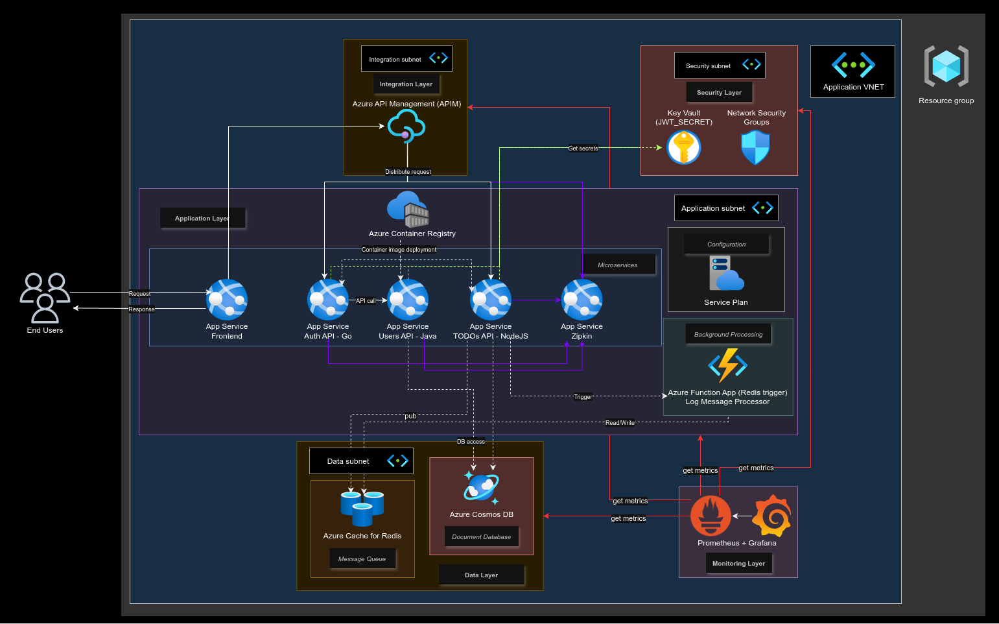
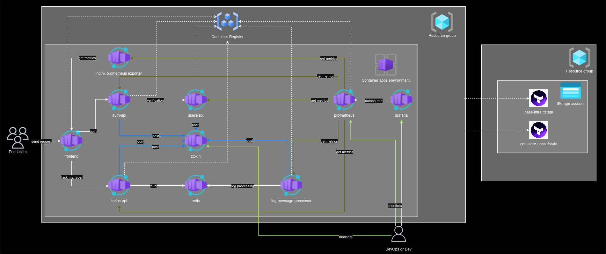

MicroTodoSuite is a five-service distributed system delivered through a fully automated, digest-pinned, signature-verified GitOps pipeline onto AWS EKS. This document is a record of the architecture decisions behind it, the security and delivery mechanics that carry every change into a cluster, and verifiable evidence of the platform's current state.
A distributed to-do application used as a vehicle to engineer a real platform: multiple languages, one contract, one delivery mechanism, and a security and observability posture that holds regardless of which service is changing.
Each service is a separate repository with its own release cadence, contract tests, and CI caller, coordinated only through published API contracts and a shared delivery mechanism — never through shared code or a shared deploy step.
auth-api — Go, JWT issuancetodos-api — Node.js, todo domain, Redis-backed eventsusers-api — Java 17 / Spring Boot 3log-message-processor — Python, Redis stream consumerfrontend — Vue 3Application code, delivery mechanism, infrastructure, shared CI/CD, and documentation are deliberately split so that each has its own review ownership and blast radius.
microservice-app-gitops — ArgoCD source of truthmicroservice-app-ops — Terraform-managed AWS infrastructure.github — reusable, SHA-pinned CI/CD workflowsmicroservice-app-docs — architecture decisions and statusmicroservice-app-slack-approval-gateway — human-in-the-loop gateEvery non-trivial change starts as a written specification — problem statement, acceptance scenarios, and a task breakdown — reviewed before implementation begins, and traced back to it in the pull request that closes it.
spec.md — problem and acceptance criteriaplan.md — technical approach and trade-offstasks.md — traceable, individually verifiable units of workEach decision below records the problem being solved, the options that were on the table, what was chosen, and the reasoning — not the order in which the work happened.
The platform did not start on AWS EKS. The original proposal, produced before any infrastructure was provisioned, targeted Azure's managed application surface directly: Azure API Management in front of App Services running each language runtime, an Azure Function App for the Python log consumer, Cosmos DB and Cache for Redis as managed dependencies, and Key Vault for secret storage. It was a reasonable starting design for a team validating whether the service boundaries were right before investing in a delivery mechanism.


Rather than design one architecture and scale it up later, the platform was specified as two explicit profiles from the start, so that the cost/complexity trade-off is a deliberate, documented choice rather than an accident of what got built first.
| Dimension | Economical profile | Full profile |
|---|---|---|
| Cluster topology | 1 EKS cluster, namespaces as environments | 3 dedicated EKS clusters (dev/staging/prod) |
| Service mesh | None — direct in-cluster networking | Istio mesh, mTLS between services |
| Log/search backend | Loki | ECK-managed Elasticsearch |
| Monthly cost profile | Low — single control plane, small nodes | High — three control planes, mesh sidecars, ECK |
| Status | Proven live (2026-09-14), now quiesced by design | Terraform and contract-tested, never applied |
The economical profile is the one that has actually run end to end. The full profile exists as validated, contract-tested infrastructure code — every capability it adds (mesh, per-environment isolation, ECK) has test coverage proving the Terraform and manifests are correct, without paying to keep three clusters warm to prove it.
Rebuilding an image per environment risks promoting something that was never actually tested — a dev build and a prod build of "the same" tag can differ.
An image is built exactly once per change, scanned, signed, and referenced everywhere after that by its SHA-256 digest — never by a mutable tag. Promotion is a Kustomize overlay update pointing to that same digest in the next environment.
Imperative kubectl patch/scale fixes drift from what's in
Git, and the next reconciliation silently reverts a hand-applied fix — a classic GitOps
failure mode.
No hand-applied mutation to managed state. A correction is a commit; a rollback is a
git revert. The single documented exception is an audited bootstrap boundary
for standing up ArgoCD itself, which cannot reconcile before it exists.
One EKS cluster, ArgoCD-reconciled, with namespaces standing in for environments and every dependency declared as a Kustomize root ArgoCD owns.
Fig. 1 — economical profile as validated on 2026-09-14. Ingress is intentionally absent: operator access is `kubectl port-forward` only, by design (spec 004, US4).
One reusable pipeline definition, pinned by commit SHA, called by a thin per-service caller workflow — so every service inherits the same security and promotion behavior without re-implementing it.
.github)ci.yml — build, unit and contract tests, static analysisrelease.yml — scan, SBOM, sign, publish to ECRpromote.yml — opens the digest-bump pull request into gitopsstack-tests.yml — integration/E2E against the composed stackEvery per-service caller pins these by commit SHA, not by tag or branch — a compromised or force-pushed upstream workflow cannot silently change what runs in a service's pipeline.
No static AWS or registry credential is stored anywhere in CI. Every job that needs AWS access requests a short-lived token via GitHub's OIDC identity provider, scoped to that repository and workflow by an IAM trust policy.
*_wo) carry secrets through a single plan/apply invocation and are never written to state.Security is enforced at two points: what is allowed to be built and signed, and what is allowed to run — the second does not trust the first without re-checking it.
Fig. 2 — an image that reaches the cluster without a valid Cosign signature verifiable against Rekor's transparency log is rejected at admission, not merely flagged.
auth-api-secrets/JWT_SECRET in-cluster.A service earns metrics, traces, and structured logs by being deployed — it does not integrate a vendor SDK to get them.
Prometheus scrapes every service; Grafana dashboards are provisioned as code alongside the services they chart, including request-latency histograms with explicit bucket boundaries validated per service.
Jaeger in the economical profile; the full profile's design carries the same trace propagation through an Istio mesh, so a request can be followed end to end without any service authoring its own tracing glue.
Loki aggregates structured logs in the economical profile. The full profile's design swaps in ECK-managed Elasticsearch for higher query volume and longer retention, without changing what a service has to emit.
Unit tests verify logic; contract, integration, and end-to-end tests verify that five independently deployed services still agree with each other.
Per-service, per-language, run on every pull request as the fastest gate in ci.yml.
Spectral lints published OpenAPI specs; Pact verifies consumer-driven contracts between the frontend and each API it calls; Schemathesis fuzzes API implementations against their own schema.
Testcontainers spins up real dependencies (Redis, databases) rather than mocking them — a lesson carried from a prior incident where a mocked dependency masked a real migration failure.
Playwright drives the composed stack through stack-tests.yml, exercising the
actual login → create-todo → view flow across all five services.
Locust load-tests the composed stack to establish baseline latency and throughput before a capacity-affecting change ships.
OWASP ZAP scans the running stack for exploitable behavior that static analysis and unit tests structurally cannot see.
Every feature is specified before it is implemented, and the specification's task list is what a pull request is measured against — not a green check or a rendered manifest. A task is marked complete only after its named artifact is located and inspected.
Short-lived branches, one concern per branch, Conventional Commit titles with a scope. The failing-test commit that specifies a change is committed before the implementation that makes it pass, and the pair is never squashed — it is the recorded evidence the cycle was followed.
CODEOWNERS ties path ownership to required reviewers. No agent — human-directed or
automated — merges with an admin override, force-pushes to main, or approves
its own pull request. An automation identity may open and describe a change; only a named
human unlocks the gate.
When a specification and reality disagree — a pinned version nobody actually shipped, a task register that doesn't match the code — the fix is a recorded reconciliation decision, not a quiet edit that erases the discrepancy.
Every change to any cluster passes through a required human review on the GitOps pull request. That review used to require someone to be inside GitHub to act on it; it does not anymore.
environment: prod approval each service's
own pipeline enforces) get a rich Slack notification with a direct link, since that gate's
human-identity requirement cannot be satisfied by an app — GitHub's own approval UI is kept
exactly as it is.A platform's documentation is only as trustworthy as the evidence behind it. This section states plainly what is running, what is proven-but-idle, and what is designed-but-unapplied — each claim tied to a verification date and method, not to intent.
The economical AWS/EKS runtime was fully validated on 2026-09-14 — 40 ArgoCD Applications
reported Healthy, exercising every service and infrastructure root together —
and was deliberately torn down via terraform destroy the following day. This is
a cost-discipline decision, not an outage: standing infrastructure costs money whether or
not it is being exercised, and the platform's value is demonstrated by its ability to be
proven and rebuilt on demand, not by being left running.
The full profile — three dedicated EKS clusters, an Istio mesh, ECK-managed Elasticsearch
— exists as Terraform and Kubernetes manifests with passing contract tests for every
capability it adds. As of the last verification (2026-09-20), every managed cluster
registration for eks-full-dev/staging/prod activates zero applications and zero
infrastructure roots: it has never been applied to real infrastructure. This is stated here
exactly as documented, not rounded up.
The status above is not a summary written from memory — it is read from an operator-facing
status document, updated and re-verified as of 2026-09-20, that records cluster-by-cluster
application counts, data-continuity limits (Redis is intentionally ephemeral pending a
separate continuity design), and traffic status (no public traffic is currently served
anywhere; DNS failover is gated behind a separate approval). That document, and the rollout
order and repository-ownership rules that govern how the full profile would be brought up if
that decision is made, live in microservice-app-docs/full-platform/.